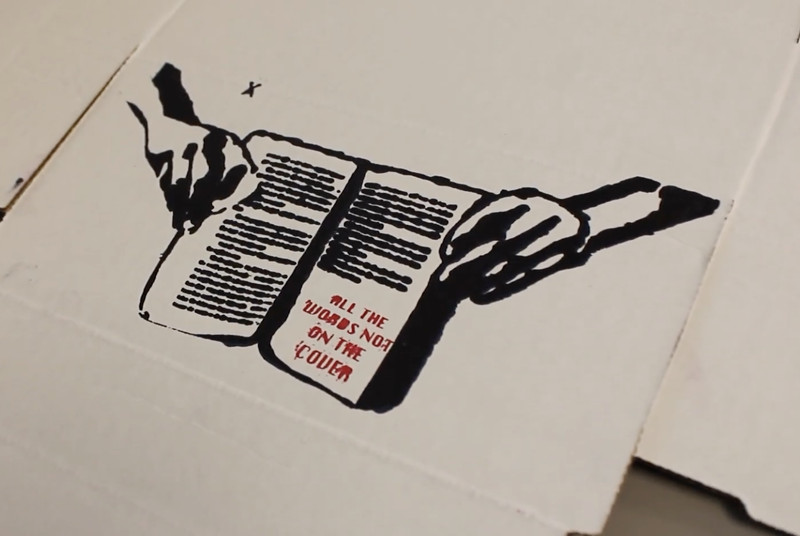

We did a project at ESUMS where we created a screen print to express a message we found important to us. The goal was to choose who we were trying to share our message to and successfully make a difference with our art. There were many requirements in this project. For example, our final screen print needed to include a photo of us and words. We took these photos with professional cameras. Finally, we printed on posters and cardboards boxes. For my project, my message was to stop making assumptions and spreading rumors about people.
First in the project, we chose an issue to address through our art, as mentioned I chose people making assumptions and stereostypes. Next we addressed our issues on Loopy Models We then moved onto brainstorming and drafting our first sketch of our screen prints on Adobe Photoshop using wacom tablets. Then in our groups, we collaborated to take the photos necessary for our screen prints. We put the final photos back into photoshop to adjust them for cutting on Sihlouette Studio on the cameo. We used threshold filters, burn and dodge, and free transform. We put the screenprints into Adobe Illustrator to dimension the size of the wooden border. Then cut the wood with a saw, and stapled them together. We took the frame and added mesh to it then our vinyl screen print designs.


In my project, I demonstrated the skill Initiative, Self-Direction, and Accountability. I used this and grew the skill when I had limited time to develop my storyboard during the midterm; I managed my time well and finished. Furthermore, when I struggled with certain photoshop steps, I took responsibility of my learning and asked questions. This was especially during the threshold filter step of designing the screen print in Photoshop. I consistently set high standards for myself during this project period; I produced high quality work and ended the second marking period with 95%. Below is what I turned in for the midterm.